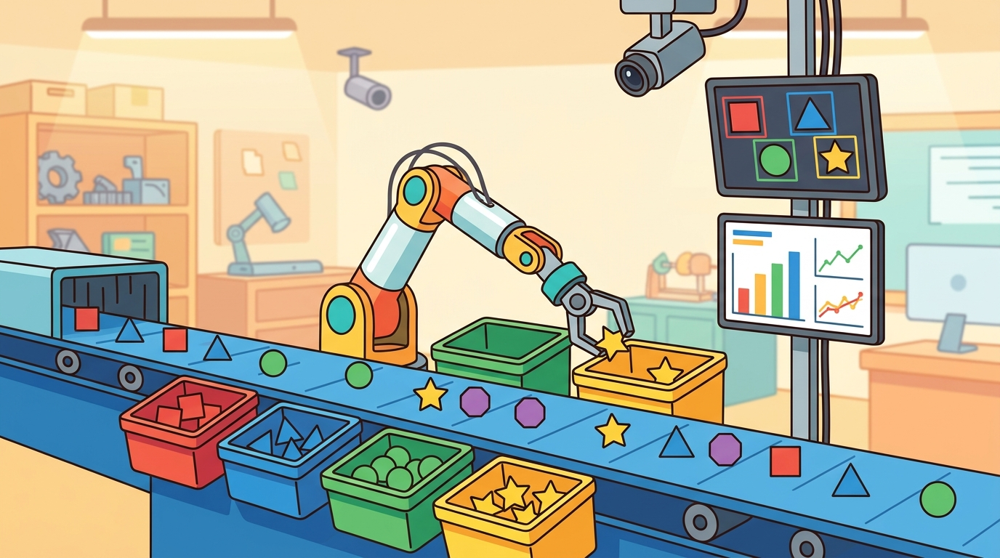

"I blocked the unsafe action and would like partial credit for making the demo boring."
A Safety Shield Doing Its Job

This section assumes familiarity with control barrier functions from section 54.3 and with constraint-violation handling from section 54.2. If you have not yet read those sections, the shield formalism and the blocked-action metric will be harder to interpret. The ideas here are extended in section 59.8, where a language-model planner replaces the learned policy while the same runtime safety layer remains in place.
A warehouse robot's policy proposes a joint-velocity command. A human steps into the work envelope. Without a runtime safety layer, the robot executes the command anyway. With one, the shield vetoes the action in under 10 ms and logs exactly why. As embodied agents move from labs into factories, hospitals, and homes, that veto mechanism is the difference between a useful robot and a liability. You will build a control-barrier shield, wire it into a live action loop, and produce evidence that separates genuine safety coverage from an override that simply breaks the task. By the end you will know how to measure both what your agent does and what it refuses to do.
A warehouse arm is mid-swing at 1.4 rad/s when a worker's wrist drifts into its path, and in the next 10 milliseconds something has to decide whether that joint-velocity command reaches the motor or dies in a logged veto: this section builds the layer that makes that decision. First we define the object of study, then we connect it to the agent loop, then we test it with a compact implementation.
The practical question for a safety-shielded agent is concrete: what does the shield need to read (a fused human-pose estimate, joint encoders, end-effector velocity), what action does it gate (a joint-velocity command to a UR5 or a thrust vector to a quadrotor), and what artifact proves it worked (an incident ledger showing the proposed command, the constraint margin in meters, the replacement action, and whether task success survived)? A Boston Dynamics Spot patrolling a construction site and a Franka Panda on a surgical bench answer those questions with different units, but the contract is identical.
Safety-shielded embodied agent should be judged by the action it improves. A section claim is strong when it names the decision, the measurement, and the failure mode before a larger model or simulator is introduced.
Theory
Because the action trace is what ultimately judges the shield, the theory has to start one level earlier, with the interface that produces that trace.
For Safety-shielded embodied agent, the practical design rule is to make the interface inspectable before optimization begins: inputs, outputs, units, latency, bounds, and failure labels should all be visible in the saved artifact.
The mechanism in Safety-shielded embodied agent is the contract between representation and action. Name what enters the module, what leaves it, which assumptions make that transformation valid, and which log would reveal a bad handoff.
Worked Example
For Safety-shielded embodied agent, keep one concrete rollout in view. A sensor reading becomes an estimate, the estimate constrains an action, the action changes the world, and the next observation confirms or contradicts the assumption. The section's idea is useful only if it improves that loop.
Consider a concrete case: a UR5 manipulator is trained with Proximal Policy Optimization (PPO) to pick objects from a conveyor. The policy proposes a joint-velocity command of $[-0.8, 1.2, 0.0, 0.0, 0.0, 0.0]$ rad/s. A control-barrier function shield checks whether the end-effector's predicted position in 50 ms would enter a 0.3 m radius cylinder centered on the human operator's last known position. The constraint value $h(s_t, a_t) = 0.12$ m (positive means safe margin remains). The shield accepts the action. On the next step the human steps closer; the predicted margin falls to $-0.04$ m, the shield vetoes and replaces the command with a zero-velocity hold. The incident is logged as: proposed velocity magnitude 1.4 rad/s, constraint violated by 0.04 m, replacement action zero, recovery delay 80 ms, task success unaffected. Over a 200-episode evaluation, 17 such vetoes occur with a false-alarm rate of 9% and overall task success of 78%. Without the shield, task success is 81% but three unsafe entries are recorded per 100 episodes.
Use Safety Gymnasium, control-barrier filters with cvxpy or OSQP, ROS 2 lifecycle nodes, and an explicit hazard log. The preserved fields are proposed action, constraint value, shielded action, intervention reason, near-miss event, and post-intervention outcome.
Practical Recipe
- Define the physical safety envelope before touching the policy: specify the unsafe-state family in real units, for example a 0.3 m exclusion cylinder around the human operator's wrist centroid, or a joint-torque ceiling of 15 Nm on a Franka Panda. Vague descriptions like "don't get too close" cannot be encoded as a CBF constraint.
- Build a nominal controller that reliably fails in simulation first. A PPO policy trained in MuJoCo for 2 M steps without any safety signal will routinely enter the exclusion zone on the UR5; that failure mode is the ground truth your shield must catch.
- Implement the CBF filter as a single-step quadratic program (QP) using OSQP or cvxpy, and verify that its solve latency is under 2 ms on the target hardware before integrating it into a ROS 2 lifecycle node. Latency above 5 ms invalidates the 50 ms prediction horizon used in most manipulator shields.
- Record failures as structured cases with physical labels: contact-proximity violation (sensor-to-obstacle distance below threshold), joint-limit overshoot (degrees past the URDF hard stop), human-zone incursion (time inside exclusion cylinder), or shield false alarm (veto issued when ground-truth state was safe by more than 0.05 m).
- Run at least one sim-to-real perturbation test: introduce 30 ms of artificial localization lag from the human-pose estimator (typical of a single Azure Kinect at 4-5 m range) and verify that the shield's prediction horizon absorbs the delay without raising the false-alarm rate above 15%.
A shield that works in simulation but halts the robot every few seconds in the real warehouse is not a safety layer; it is a productivity tax. What happens when the shield works perfectly in simulation but the deployed robot halts every few seconds in the real warehouse? That is the false-alarm problem, and it is the most common reason a safety layer gets disabled by operators in the field.
A false alarm occurs when the shield vetoes an action that would not have caused a safety violation. In a physical robot, every false alarm costs real time: the robot stalls, the operator may lose confidence in the system, and downstream tasks accumulate delay that a simulation never sees. In high-throughput settings such as surgical assistance or warehouse picking, false alarms above roughly 10 to 15 percent make the shielded agent less productive than an unshielded one, which defeats the purpose of the safety layer. A 12% false-alarm rate on a 6-hour warehouse shift means roughly 430 unnecessary stalls: the robot sits idle for the equivalent of 35 minutes doing nothing wrong.
To compute the false-alarm rate, run each proposed action through a forward model or held-out simulation and check whether the true trajectory would have violated the constraint. Count the vetoes where the true trajectory was safe. Divide that count by total vetoes. To keep the rate below threshold, tune the prediction horizon and the safety margin together. A margin that is too wide relative to pose-estimator error produces spurious vetoes near the task-critical region, even when the human is well outside the exclusion zone.
The common mistake in Safety-shielded embodied agent is to trust a component score before checking the closed-loop interface. The failure usually appears where state, timing, authority, or evaluation context crosses a module boundary.
A team using Safety-shielded embodied agent starts by writing the task panel, not by picking the largest model. They keep a baseline run, a maintained-tool run, and a perturbation run in the same result folder. The comparison is accepted only when the action trace, metric, and failure labels come from one script.
A good embodied system makes safety-shielded embodied agent visible twice: once in the design sketch and once in the replay artifact. The second view keeps the first one honest.
For Safety-shielded embodied agent, the open research question is not whether a larger policy can produce a better demo. The sharper question is whether the method improves reliability across new scenes, new embodiments, delayed feedback, and rare failures under an evaluation protocol that another lab can reproduce.
For Safety-shielded embodied agent, can you name the observation, action, protected assumption, success metric, and one likely failure case? If any field is vague, rewrite the contract before adding model complexity.
Topic-Native Deepening
A safety-shielded capstone asks whether a learning or planning system can stay productive while an explicit monitor rejects unsafe actions. This is a strong project because it forces the practitioner to specify the safety envelope rather than treating safety as a vague afterthought.
The project fails if the shield is decorative or if it blocks almost every action and the nominal controller never really works. A successful implementation rewards both task completion and meaningful safe intervention statistics.
Safety-shielded embodied agent becomes teachable once the student can state the operative variables, the decision boundary, and the evidence artifact. The section should therefore be read together with Chapter 54 on safety and Chapter 7 on control, where the same loop is developed from adjacent angles.
Rewarding safe intervention only makes sense once you see why the policy cannot be trusted to provide that safety on its own.
The motivation is simple: a learned policy optimizes expected reward but has no guarantee it will respect a hard constraint it never saw enforced during training. A safety shield sits between the policy and the actuator and enforces that constraint at runtime, independently of how the policy was trained. This is called policy-agnostic runtime enforcement, and it means you can swap policies, retrain, or fine-tune without weakening the safety boundary. Figure 59.7B shows this arrangement: the policy proposes an action, the shield checks it against the current state, and the action either passes through or is replaced by a logged safe fallback.
Think of a kitchen exhaust hood with a built-in fire suppression system. No matter which chef is cooking, no matter how aggressive or experimental the recipe, the suppression system watches the temperature above the burners and triggers independently of anything the chef does. You can hire a new chef, change the menu entirely, or switch cuisines, and the suppression system keeps working the same way because it monitors the physical outcome, not the cook's intentions or training. Policy-agnostic runtime enforcement works the same way: the shield watches the state of the world, not the internals of the policy, so retraining or replacing the policy leaves the safety layer completely intact.
Let $\pi(a_t\mid s_t)$ propose an action and let a shield $\sigma(s_t,a_t)\in\{0,1\}$ accept or replace it. The deployed action is $\tilde a_t = a_t$ if $\sigma=1$, otherwise $\tilde a_t = a_t^{safe}$, and the capstone should report both task return and blocked-action rate.
Blocked-action rate is not automatically good. A high rate may mean the base controller is dangerous or the shield is too conservative. That number must be interpreted together with success and recovery metrics.
Students often assume that adding a runtime safety shield makes the system provably safe, treating the shield as a hard guarantee. In embodied AI this is wrong: the CBF filter's correctness depends entirely on the accuracy of the state estimate, the validity of the prediction horizon, and whether the unsafe-state family was specified completely. A shield built on a noisy human-pose estimate with 80 ms latency can confidently accept an action that leads to contact 120 ms later, because the constraint value was computed on stale data that showed a safe margin. The correct mental model is that the shield is only as strong as the perception pipeline feeding it: the shielded system has bounded risk under the stated sensor model, not zero risk, and the evaluation must report that sensor model explicitly alongside safety metrics.
A shield with an overly tight safety margin can cause task failure by a mechanism that looks like policy failure. If the human workspace cylinder radius is set to 0.5 m on a tabletop task where the nominal pick point is 0.45 m from the operator's typical position, the shield vetoes nearly every grasp attempt and the robot stalls. The fix is not to widen the safety margin indiscriminately; it is to redesign the workspace layout or tighten the human-pose estimator so the cylinder tracks a real envelope rather than a worst-case guess. Always plot veto locations spatially: if they cluster on the task-critical region, the problem is the safety specification, not the policy.
When implementing a CBF shield with cvxpy or OSQP, always recompute the constraint Jacobian dh/dx at the current state before each QP solve. A common mistake is to cache the Jacobian from the previous timestep; OSQP accepts the stale matrix without error but returns a subtly incorrect safe action, which is especially dangerous near constraint boundaries. Set solver=cp.OSQP with warm_start=True to keep solve latency under 1 ms on a UR5-class problem while still recomputing the constraint data each step. Also scale the safety margin by your human-pose estimator's 95th-percentile position error rather than using a fixed radius; this prevents the shield from vetoing on the task-critical region when pose estimation is uncertain.
- Name the unsafe state or action families before choosing the policy architecture.
- Implement a nominal controller or policy that is allowed to fail in simulation.
- Add a shield that either vetoes, clips, or replaces unsafe actions.
- Measure task success, intervention count, blocked-action rate, and false alarms together.
- Present one replay where the shield clearly helped and one where it was overly conservative.
| Dimension | What To Specify | Why It Matters |
|---|---|---|
| Unsafe-action definition | Collision, joint limit, human zone, battery floor, or no-fly region | Defines what the shield is trying to prevent. |
| Intervention policy | Veto, clip, projection, or safe replacement | Changes both control feel and task success. |
| Evaluation | Success, blocked actions, false alarms, recovery delay | Shows the cost of safety. |
| Artifact | Safety replay plus incident ledger | Makes the monitor behavior inspectable. |
def validate_card(payload: dict[str, object]) -> dict[str, object]:
assert payload, "payload must not be empty"
return payload
# Safety-shield evaluation card.
card = {
"unsafe_region": "human workspace cylinder",
"interventions": 17,
"false_alarm_rate": 0.09,
"task_success": 0.78,
}
print(validate_card(card)){'unsafe_region': 'human workspace cylinder', 'interventions': 17, 'false_alarm_rate': 0.09, 'task_success': 0.78}The expected output must expose the tradeoff. If the task succeeds but the intervention count is extreme, the next engineering step is to improve the nominal controller, not to celebrate the shield.
After the from-scratch contract is clear, the practical route uses ROS 2, control barrier function toolkits, shielded RL baselines, MuJoCo, runtime monitors. The payoff is that standard interfaces, logging, batching, and replay support move from ad hoc glue code into maintained infrastructure, while the evidence schema stays the same.
This project works well with drones, manipulators, or mobile robots because the shield can be simple and still meaningful, for example a workspace cylinder or joint-limit barrier. Simplicity is an advantage because the safety boundary is easy to reason about in terms of false positives and false negatives.
1. Uncertainty-aware neural CBFs. Recent work replaces hand-specified barrier functions with barrier certificates learned from data while retaining formal safety proofs under bounded uncertainty. The Berkeley group's neural CBF line (Dawson et al., 2023) and the 2024 paper "Learning Safe Unlabeled Multi-Robot Planning with Motion Constraints" (Mujahed et al., ICRA 2024) push this direction toward crowded multi-agent scenes where hand-designed envelopes are impractical.
2. Language-conditioned safety specifications. Instead of pre-coding the unsafe-state family in real units, 2024-2025 work uses vision-language models to infer the safety constraint on the fly from a natural-language directive such as "stay 0.5 m from any person." Carnegie Mellon's COME-Robot project and SafeVLP (2025) show that VLM-derived constraint boundaries can be verified post hoc against a formal CBF filter, enabling zero-shot shielding on novel tasks.
3. Formal runtime monitors for diffusion-based policies. Diffusion policies (Chi et al., RSS 2023; followed by the 2024 Octo and pi-zero models) produce action distributions rather than point actions, which breaks the standard single-step QP assumption. Open work in 2025 studies how to apply control-invariant set methods to sample-based policies: the shield must accept a batch of action candidates rather than a single proposed command, substantially raising QP dimensionality.
Open PhD problem: How do you certify a runtime safety shield when the human-pose estimator itself is a large vision model whose output distribution is non-Gaussian and whose latency varies from 10 ms to 200 ms depending on scene complexity? The gap between the shield's fixed prediction horizon and the estimator's variable latency is the unresolved source of contact incidents in deployed warehouse robots as of 2025.
For safety shielding, the artifact should show which unsafe command was blocked, what replacement action was issued, and whether task success survived the intervention.
Project Ideas
Beginner (weekend): CBF-shielded CartPole in Gymnasium. Wrap Gymnasium's CartPole-v1 with a control barrier function that blocks actions pushing the pole angle beyond 0.15 rad, then train a PPO policy from Stable-Baselines3 without safety rewards and add the shield only at inference time. The key challenge is computing the CBF constraint Jacobian analytically for a 4-state linear system and verifying that OSQP solves it in under 0.5 ms per step.
Intermediate (1-2 weeks): Human-zone shield on a simulated UR5 in MuJoCo via MuJoCo MJX or PyBullet. Train a pick-and-place policy with PPO, then add a ROS2 lifecycle node that intercepts joint-velocity commands and runs an OSQP QP to enforce a 0.3 m exclusion cylinder around a randomly moving obstacle tracked by a simulated depth camera. The key challenge is keeping shield latency under 2 ms while recomputing the constraint Jacobian from the current end-effector Jacobian at every control step and measuring false-alarm rate against ground-truth forward simulation.
Step-Through: CBF shield veto decision
Trace one control step on the UR5 with concrete numbers. The human-zone constraint is $h(s,a) = d_{pred} - r$, where $d_{pred}$ is the predicted end-effector-to-operator distance in 50 ms and $r = 0.30$ m is the exclusion radius. Current state: end-effector at distance 0.42 m, closing at 1.4 m/s. (1) Predict displacement over the 50 ms horizon: $1.4 \times 0.050 = 0.070$ m. (2) Predicted distance: $0.42 - 0.070 = 0.350$ m. (3) Constraint value: $h = 0.350 - 0.30 = +0.050$ m, so the proposed action passes. Next step, the operator steps in: distance now 0.36 m, closing at 1.4 m/s. (1) Displacement $= 0.070$ m. (2) Predicted distance $= 0.36 - 0.070 = 0.290$ m. (3) Constraint value $h = 0.290 - 0.30 = -0.010$ m. Negative, so the shield vetoes, replaces the command with a zero-velocity hold, and logs: proposed speed 1.4 m/s, margin violated by 0.010 m, replacement zero, recovery delay 80 ms. The sign of $h$ alone decided the veto.
Real-World Application: collaborative manufacturing
Veo Robotics' FreeMove system (now part of Symbotic) shields industrial arms such as the FANUC and KUKA cells on automotive lines by fusing 3D depth sensors into a real-time human-zone monitor that overrides the robot controller when a worker enters a dynamically computed safety envelope. The same policy-agnostic principle from this section applies: the safety layer watches the physical state and slows or stops the arm regardless of what program the robot is running, which is exactly what lets a fenceless cell pass ISO/TS 15066 speed-and-separation monitoring.
Lab: Bolt a CBF shield onto CartPole
Goal: measure empirically how a runtime safety shield trades task return against blocked-action rate, and watch false alarms appear when the safety margin is too wide. Tools: Python with Gymnasium (CartPole-v1), Stable-Baselines3 (train a PPO policy with default rewards, no safety term), and a hand-coded control-barrier filter ($h(s) = \theta_{max}^2 - \theta^2$, where $\theta_{max}$ is the angle limit). What to do: after training, intercept each proposed action at inference and veto it (substitute the opposite action) whenever it is predicted to push $|\theta|$ past $\theta_{max}$ one step ahead. What to vary: sweep $\theta_{max}$ over 0.10, 0.15, 0.20, and 0.25 rad. What to observe: for each setting record mean episode return, number of vetoes per episode, and the false-alarm rate (vetoes where a one-step forward simulation shows the unshielded action would have stayed safe). You should see the tightest margin produce many vetoes and a sharp drop in return, while the widest margin almost never fires; plot return against blocked-action rate to find the knee. Budget 15-30 minutes.
- Safety-shielded embodied agent matters when it changes an embodied agent's action under a stated observation and metric.
- Put the safety filter in the action path and measure both task completion and blocked unsafe actions.
- Strong evidence is saved as one artifact containing the baseline, the maintained-tool path, the metric panel, and labeled failures.
Design a method-matched experiment for Safety-shielded embodied agent. Specify the environment, observation schema, action interface, metric, and one perturbation that targets the section's core assumption.
Section References
Savva, M. et al. Habitat: A Platform for Embodied AI Research. ICCV, 2019.
Use for simulated navigation projects, reproducible scene tasks, and embodied evaluation loops.
Cadene, R. et al. LeRobot: State-of-the-art Machine Learning for Real-World Robotics in Pytorch. GitHub project and technical documentation, 2024.
Use for dataset conversion, policy training, and capstone projects built around open robot-learning workflows.
What's Next?
Next, continue with section-59.8. Carry forward the artifact contract from Safety-shielded embodied agent, but change exactly one design axis before comparing results: embodiment, action interface, evaluation panel, or safety risk.